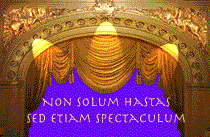
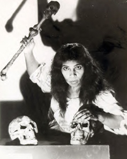

|
|||||
|
Auditions Events Rehearsal Schedules Interviews Photos Reviews More Fun Stuff! The
Super Handbook Spearheadnews.com is not officially affiliated with any
performing arts organization. ©2003 SpearheadNews |
What's
?
Click this link frequently for the latest news and features! Magic Flute PicturesRare photos from the Final Dress rehearsal and an even rarer one From the Vaults. Die Zauberflöte PartiesUlrica reports on not one - but two fabulous cast parties! Bake Sale and Annual Party DatesThere will be two more bake sales and the date and location of the annual party are now known. Opera in the ParkUlrica
reports!! Opera LiteA canonical list of cost-cutting operas, e.g., Debt in Venice |
New Column!
|
 |
||
What is a Super? The
unofficial motto of the San Francisco Opera Supernumeraries roughly
translates to “We not only carry the
Spears but also the Show”.
More>> |
|||||
Super
Humans by Ulrica |
|||||
|
Ulrica reports on Opera in the Park, among other tidbits...But who is Ulrica? Our gossip columnist named herself after the gypsy in Un Ballo in Maschera. Below, the great contralto Marian Anderson, in January 1955, making Metropolitan Opera history as the first African-American to sing on their stage... performing as Ulrica!  |
|||||